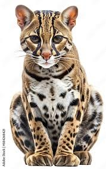

Espèces de la meme famille que les lions
Page principale
Les lions font partie de la grande famille des félins.
Dans cette famille, on y retrouve de célèbres animaux comme le chat, le tigre, le jaguar
ou d'autres un peu moins connus comme le lynx ci-dessous.
On y retrouve aussi le manul, l'ocelot, la Panthère, le serval et le puma.
Manul
Ocelot

Puma
Serval
La plupart de ces animaux sont malheureusement en voie de dispariton tout comme le lion.
Il est donc important d'agir pour empecher la disparitonnde ces espèces.
Merci d'avoir visité mon site. Pour me contacter, retrouvez moi en cliquant sur le lien mail ci-dessous.
Jaimelesfrites@gmail.com